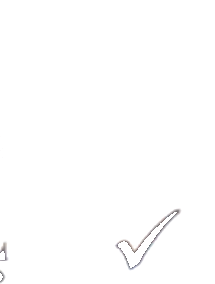
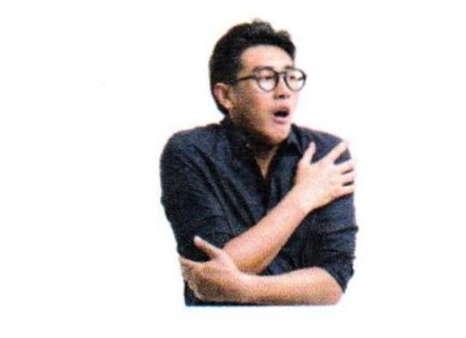
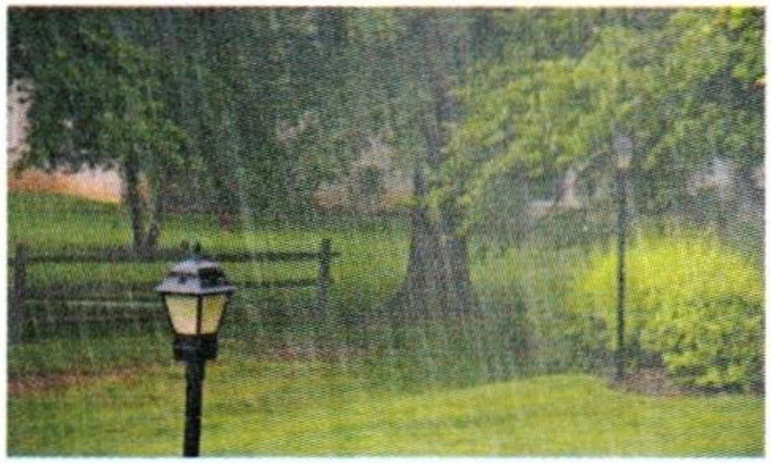

第二部分Part IIЧасть II
第4—5题：听问题，选择正确回答。每题听两次。Questions 4-5: Listen to each question and choose the correct answer. Each question will be played twice.Вопросы 4-5: Прослушайте каждый вопрос и выберите правильный ответ. Каждый вопрос будет проигран дважды.
Jīntiān tiānqì zěnmeyàng?例如： 今天 天气 怎么样？
How is the weather today?Какая сегодня погода?fēicháng rèA 非常 热
very hotочень жаркоhěn hǎotīngB 很 好听
sounds beautifulзвучит красивоzài hē shuǐC 在 喝 水
drinking waterпьет водуzài chī yàoA 在 吃 药
yǒudiǎnrB 有点儿
bú tài hǎoC 不 太 好
5.
xià xuě leA 下 雪 了
tài rè leB 太 热 了
bù hē shuǐC 不 喝 水
第三部分Part IIIЧасть III
第6—8题：听对话，选择最匹配的图片。每题听两次。Questions 6-8: Listen to each dialogue and choose the correct picture. Each dialogue will be played twice.Вопросы 6-8: Прослушайте каждый диалог и выберите подходящую картинку. Каждый диалог будет проигран дважды.
AА
BБ

CВ

DГ